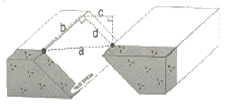
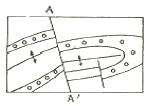
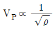
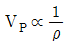
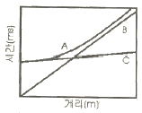
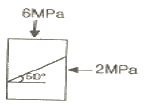
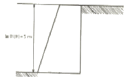

응용지질기사 (2007-08-05 기출문제)
1과목: 암석학 및 광물학
1. 다음 중 면심공간격자의 단위포 함량(Z)는?
- Z=1
- Z=2
- Z=3
- Z=4
(정답률: 95%)

2. 불투명 광물의 연마편 상에서 반사광을 이용하여 관찰할 수 없는 것은?
- 반사도
- 색
- 이방성
- 간섭색
(정답률: 55%)
3. 다음 광물 중 두 방향의 벽개면을 갖는 것은?
- 흑운모
- 금홍석
- 형석
- 섬아연석
(정답률: 34%)
4. 다음 원소들의 전자구조에서 L각에 8개의 전자를 가지고 있는 원소가 아닌 것은?
- Ne
- Mg
- Al
- F
(정답률: 알수없음)
5. 연속된 배위다면체 속에 있는 양이온간의 척력(반발력)이 가장 큰 경우는?
- 꼭짓점을 공유하는 경우
- 능을 공유하는 경우
- 면을 공유하는 경우
- 독립적으로 존재하는 경우
(정답률: 알수없음)
6. 알바이트(albite) 쌍정은 다음에서 어떤 결정면을 쌍정면(twin plane)으로 작용하여 생성되는가?
- (100)면
- (010)면
- (001)면
- (110)면
(정답률: 93%)
7. 광물의 색을 결정하는 자연광의 가시광선 영역 가운데 파장이 가장 긴 부분은?
- 적색
- 청색
- 보라색
- 황색
(정답률: 64%)
8. Hermann-Mauguin표기법으로 표기한 대칭이 2/m 2/m 2/m이면, 6정계 중 어느 결정계에 속하는 것인가?
- 정방정계
- 사방정계
- 등축정계
- 단사정계
(정답률: 알수없음)
9. 광물의 온도 상승에 따른 흡열반응과 발열반응의 온도와 그 강도를 측정하는 분석법은 무엇인가?
- 시차열분석
- 열중량분석
- 시차주사열용량분석
- 적외선흡수분광분석
(정답률: 알수없음)
10. 다음 중 서로 같은 종류의 결정 간에 이루어지는 규칙적 성장은 무엇인가?
- 인터그로스
- 에피탁시
- 다이아탁시
- 평행연정
(정답률: 46%)
11. 다음 중 분급이 가장 불량한 퇴적암은?
- 석회암
- 이암
- 풍성사암
- 빙성암
(정답률: 79%)
12. 그레이와케(graywacke)의 특성이 아닌 것은?
- 점토질 기질을 소량(5% 미만) 포함한다.
- 암회색을 띠며, 분급도가 낮다
- 암편, 장석, 유색광물과 같은 불안정한 성분을 다량 포함한다
- 입자의 원마도가 낮다.
(정답률: 알수없음)
13. 다음 중 녹색 편암상의 광물군에 속하지 않는 것은?
- 녹니석
- 석류석
- 양기석
- 백운모
(정답률: 29%)
14. 셰일이 변성작용을 받을 때 저변성에서 고변성으로 변함에 따라 형성되는 변성암의 순서가 맞는 것은?
- 점판암 → 천매암 → 편암 → 편마암
- 천매암 → 편마암 → 점판암 → 편암
- 편마암 → 편암 → 천매암 → 점판암
- 편암 → 점판암 → 편마암 → 첨매암
(정답률: 93%)
15. 퇴적물을 그 기원에 따라 분류하듯이 퇴적암도 쇄설성, 화학적, 생물학적 기원의 퇴적암으로 나눌 수 있다. 다음 중 쇄설성 기원의 퇴적암으로만 짝지어진 것은?
- 각력암, 사암, 실트암
- 각력암, 사암, 쳐트
- 석회암, 규조토, 백운암
- 석회암, 백운암, 실트암
(정답률: 알수없음)
16. 다음 중 동력변성작용 시 형성되는 변성암은?
- 압쇄암
- 유문암
- 석회암
- 혼펠스
(정답률: 90%)
17. 북한산에서 채취한 화강암의 암석박편에서 정누대구조(normal zonal structure)를 보여주는 사장석의 결정이 관찰되었다. 이 결정의 중심부에서 연변부로 가면서 함량이 상대적으로 증가하는 원소는?
- Ca
- Fe
- Mg
- Na
(정답률: 알수없음)
18. 관입암상(sill)에 대한 설명 중 옳은 것은?
- 변성암 특히 편마암 지역에서 주로 관찰된다.
- 주로 고각도로 다른 암석을 관입한다.
- 주로 현무암으로 구성된다.
- 주로 퇴적암의 층리면에 평행한 상태로 관찰된다.
(정답률: 알수없음)
19. 다음 중에서 점성이 가장 큰 마그마는?
- 안산암질 마그마
- 유문암질 마그마
- 초고철질 마그마
- 현무암질 마그마
(정답률: 70%)
20. 다음 중 우이드가 생성되는 환경으로 가장 적절한 곳은?
- 조간대
- 심해
- 화구
- 강바닥
(정답률: 알수없음)
2과목: 구조지질학
21. 다음은 아래 그림을 잘못 설명한 것은?

- a - net slip
- b - strike slip
- c - heave
- d - throw
(정답률: 91%)
22. 다음 그림에서 단층 A-A'는 기하학적 분류에 의하면 어떤 단층에 해당하는가?

- 종단층
- 횡단단층
- 정단층
- 주향단층
(정답률: 46%)
23. 습곡의 발달은 다층(multilayer)상태에서 인접한 층(layer)간의 두 계와 역학적 성질(연성차이)에 크게 규제된다. 변형작용을 겪은 화강암에서 습곡구조가 일반적으로 관찰되지 않는 이유로 가장 알맞은 것은?
- 층리가 잘 발달하여 있기 때문이다.
- 변형작용 시 층리가 없어지기 때문이다.
- 층리가 발달되지 않은 등방성 암체이기 때문이다.
- 인접한 층리사이에서 연성차이가 너무 크기 때문이다.
(정답률: 82%)
24. 다음 중 단층과 관계가 가장 먼 단열구조는?
- En echelon array
- Horsetail splays
- Pinnate fracture
- Columnar joint
(정답률: 55%)
25. Isopach map은 석유탐사 등에서 많이 이용된다. 이는 다음 어느 것을 표시한 도면인가?
- 지층의 두께
- 지층의 암상
- 지하에 있는 습곡
- 동일화석의 분포
(정답률: 91%)
26. 습곡의 힌지(hinge)부를 연결한 면은 무엇인가?
- 선경사(plunge)
- 날개(limb)
- 습곡축(fold axis)
- 습곡축면(axial surface)
(정답률: 20%)
27. 퇴적암에 있어서 지층의 상하를 구별하는 데에 도움이 되지 않는 것은?
- 절리(joint)
- 물결자국(ripple mark)
- 건열(mud crack)
- 사층리(cross bedding)
(정답률: 알수없음)
28. 다음 중 함석유층의 매장량을 지배하는 중요한 요소는?
- 암의 입자 크기
- 암석의 공극률과 투수성
- 입자의 분급도
- 입자의 원마도
(정답률: 알수없음)
29. 다음 중 리아스식 해안의 형성 원인은?
- 침강 운동으로 인하여 형성된다.
- 융기운동으로 인항 형성된다.
- 화산작용에 의해 형성된다.
- 습곡작용에 의해 형성된다.
(정답률: 알수없음)
30. 지구 내부 상태에 대한 설명으로 틀린 것은?
- 층상구조를 이룬다.
- 밀도는 전부 동일하다.
- 지열은 내부로 갈수록 높아진다.
- 철이 고체 상태로 존재하는 지구 내부의 중심부가 내핵이다
(정답률: 알수없음)
31. 일반적으로 정단층에 수반하여 장력으로 인하여 상반이 상대적으로 하강하여 좁고 긴 열곡이나 분리가 생기는 것을 말하는 것은?
- dip slip
- horst
- net slip
- graben
(정답률: 44%)
32. 단층면 양측에 반대방향으로 변위가 일어나는 것으로 중앙해령에서 새로운 해양지각이 생성됨에 따라 해저 지판이 수평 이동되는 것과 관계가 있는 단층은?
- 변환단층
- 역단층
- 사교단층
- 회전단층
(정답률: 알수없음)
33. 대륙이 한 덩어리의 pangaea에서 분리되어 현재와 같은 모양의 대륙으로 분포되었다는 대륙표이설의 증거와 관계가 먼 것은?
- 히말라야산맥과 로키산맥은 퇴적암으로 되어 있다.
- 남극대륙, 호주, 남아프리카에는 같은 식물 화석이 나타난다.
- 인도, 아프리카, 호주는 대부분 현재 열대 내지온대 지방이지만 고생대 말에 빙하작용이 있었다.
- 열대지방에서 생성되는 석탄층이 남극대륙에서 발견된다.
(정답률: 57%)
34. 다음 중 준평원에 대한 바른 설명은?
- 장년기 지형에서 흔히 타나나는 거의 평탄한 지형을 말한다.
- 노년기 지형에서 나타나는 평탄한 지형으로 침식 기준면 가까이 까지 침식되어 형성된다.
- 유년기 지형에서 나타나는 거의 침식 받지 않은 평탄한 지형을 말한다.
- 장년기 지형에서 나타나는 기복이 심한 지형으로 지반이 상승 시 나타난다.
(정답률: 65%)
35. 압쇄암(mylonite)의 설명 중 적절하지 않은 것은?
- 지하 5km 이내에서 형성된다.
- 온도 250~350도 이상에서 형성된다.
- 엽리구조를 가진다.
- 일반적으로 선구조를 포함하고 있다.
(정답률: 60%)
36. 지자기의 줄무늬가 대칭적으로 발견되는 곳은?
- 발산경계
- 수렴경계
- 변환단층경계
- 충돌경계
(정답률: 50%)
37. 층리면이 습곡 되어 있을 때 축면엽리와 지층면이 만나서 형성된 지질구조는?
- 신장된 선구조
- 교차 선구조
- 파랑습곡 선구조
- 부딘 선구조
(정답률: 알수없음)
38. 변형작용 전에 정육면체의 한 변의 길이가 10m였다. 변형작용 이후에 직육면체의 높이는 15m, 밑면의 가로는 8m, 세로는 5m이다. 체적변형률은?
- -0.6
- 0.4
- 0.6
- -0.4
(정답률: 알수없음)
39. 풍성지형 중 여러 방향에서 불어오는 바람에 의해서 발달하는 모래언덕의 형태는?
- Barchan dune
- Star dune
- Parabolic dune
- Transverse dune
(정답률: 알수없음)
40. 다음 중 호소를 성인에 따라 분류할 때 포함되지 않는 것은?
- 구조호(tectonic lake)
- 내륙호(inland lake)
- 폐색호(dammed lake)
- 잔적호(relic lake)
(정답률: 알수없음)
3과목: 탐사공학
41. 전기탐사법 중에서 분산상의 황화광상 탐사에 가장 적합한 방법은?
- 지전류법
- 전기비저항법
- 인공분극법
- 유도분극법
(정답률: 알수없음)
42. 충력측정지점은 2477m 기준면위에 있다. 측정값 및 표준 중력 값은 각각 981.9567gal과 982.7270gal이다. 프리에어이상은 몇 mgal인가?
- -3.7
- -4.5
- -5.9
- -7.2
(정답률: 34%)
43. 균질한 매질에서 P파의 속도와 밀도의 관계로 맞는 것은?
- VP∝ρ
- VP∝√ρ


(정답률: 40%)
44. 다음 중 방사능 탐사 시에 주로 이용되는 성분은?
- 알파선
- 베타선
- 감마선
- 엑스선
(정답률: 69%)
45. 신틸레이션 미터(scintillation meter)에 사용하는 결정의 성분은?
- Ar
- Ra
- NaI
- NaN
(정답률: 91%)
46. 지구화학적 환경 중 2차 환경의 특징이 아닌 것은?
- 유체의 이동이 제한을 받는다.
- 산소와 이산화탄소가 풍부하다
- 온도와 압력이 낮다.
- 풍화작용이나 토양의 형성 작용 및 퇴적작용이 활발하다.
(정답률: 알수없음)
47. 밀도 2.2g/cm3, 종파속도 2000m/s 인 1층과 밀도 2.6g/cm3, 종파속도 3000m/s 인 2층이 수평으로 경계를 이룬다. 1층으로부터 발생한 평면파가 경계면에 수직으로 입사할 때, 그 반사계수는 얼마인가?
- 0.14
- 0.28
- 0.42
- 0.56
(정답률: 알수없음)
48. 항공기나 배와 같이 움직이는 상태에서 중력을 측정했을 때만 적용되는 중력보정은?
- 에트뵈스보정
- 부게보정
- 대기보정
- 조석보정
(정답률: 85%)
49. 다음 중 평균 대자율이 가장 큰 암석은?
- 안산암
- 사암
- 석회암
- 규암
(정답률: 82%)
50. 다음은 탄성파 발생원이다. 해상탐사용으로 가장 많이 사용되는 비폭발성 에너지원은?
- 바이브로사이스(vibroseis)
- 서퍼(thumper)
- 웨이트드롭(weight drop)
- 에어건(air gun)
(정답률: 67%)
51. 자연발생적인 공중방전(예 : 번개)을 송신 원으로 이용하여 1~1000Hz 주파수대역에서 경사각을 측정하는 전자탐사 방법은?
- MT(Magnetotel luric)법
- LOTEM(Long Offset TEM)법
- AFMAG(Audio Frequency Magnetic)법
- CSAMT(Controlled Sourece AMT)법
(정답률: 54%)
52. 유도분극탐사(IP)에서 두 개 주파수의 전기비저항이 다음과 같을 때 백분율 주파수 효과(PFE)는? (저주파수 비저항 = 110Ωm 고주파수 비저항=100Ωm)
- 10%
- 15%
- 20%
- 25%
(정답률: 알수없음)
53. 외부 자기장을 서서히 증가시키면 강자성 물질의 자기유도는 원점으로부터 곡선 적으로 증가하다가 어느 한계에 도달하면 더 이상 증가하지 않으며, 외부 자기장을 감소시키면 자기유도도 감소하나 처음 증가했던 곡선을 따라 감소하지 않고 일정량의 잔류자기가 남게 되는 곡선적인 관계를 무엇이라 하는가?
- 함자기력 곡선(coercive force loop)
- 자기 쌍극 곡선(magnetic dipole loop)
- 표준 곡선(standard curve)
- 자기이력 곡선(hysteresis loop)
(정답률: 64%)
54. 토양의 무기성분이 산성 부식 산의 영향으로 심하게 분해되어 Fe, Al 까지도 졸(sol)상태로 되어 하층으로 이동하는 토양생성과정을 무산 작용이라고 하나?
- Laterite화 작용
- Podzol화 작용
- Glei화 작용
- 석회화 작용
(정답률: 알수없음)
55. 지하에서 자연적으로 발생하는 전위를 자연전위라 한다. 다음 중 발생원인의 성격이 나머지 셋과 다른 것은?
- 전기역학적 전위
- 확산전위
- 셰일 전위
- 광화전위
(정답률: 알수없음)
56. 자류자기에 대한 설명 중 틀린 것은?
- 잔류자기의 강도는 화성암이나 열변성 작용을 받은 변성암류에서 높고 퇴적암류에서 낮다.
- 일정한 온도 하에서 짧은 시간 동안 존재하다가 없어지는 외부자기장에 의하여 암석이 잔류자기를 얻게 되는 현상을 등온잔류자화라고 한다.
- 자성물질이 높은 온도로부터 큐리온도를 거쳐 서서히 식어갈 때 외부자기장에 의해서 강하고 안정된 잔류자기를 얻게 되는 현상을 열잔류자화라고 한다.
- 콜로이드 상태의 세립질 물질이 퇴적되면서 잔류 자기를 얻게 되는 현상을 화학잔류자화 라고 한다.
(정답률: 알수없음)
57. 지구화학탐사 자료(data)가 정규분포를 보일 때 평균값을 M. 표준편차를 S라고 하면 threshold는 어떤 값이 적절한가?
- M+S
- M+2S
- M+3S
- M-S
(정답률: 70%)
58. 중력탐사자료에 대한 해석법으로 가장 적합한 것은?
- 2차미분법
- 포아송 관계식
- 동일선법
- 로그-파워법
(정답률: 70%)
59. 반사법 탄성파 자료의 전산처리 과정 중에서 트레이스 상에 직접파, 굴절파, 유도파 등의 잡음이 나타나는 부분이나 동보정 후에 파형의 신장이 심하게 나타나는 부분을 제거하는 작업은 다음 중 무엇인가?
- 편집(editing)
- 이득회수(grain recovery)
- 뮤팅(muting)
- 공심점 취합(common midpoint gather)
(정답률: 59%)
60. 직접파, 반사파, 굴절파가 지오폰에 도달하는 것을 나타낸 주시곡선에서 A, B, C는 순서대로 각각 무엇인가? (단, 단일 경계면 위에서 탄성파 탐사를 수행하고, 지오폰은 일직선상에 파원으로부터 일정한 간격을 두고 전개하였다고 가정)

- 직접파 - 반사파 - 굴절파
- 굴절파 - 직접파 - 반사파
- 반사파 - 직접파 - 굴절파
- 반사파 - 굴절파 - 직접파
(정답률: 60%)
4과목: 지질공학
61. 무게 10200g의 용기에 흙 시료를 담고 그 전체의 무게를 측정하니 16550g이었다. 이를 건조한 다음 측정하니 14340g이었다. 흙 시료의 함수비는 얼마인가?
- 63.38%
- 53.58%
- 50.20%
- 45.20%
(정답률: 알수없음)
62. 다음은 흙의 전단강도에 대한 설명이다. 틀린 것은?
- 흙의 전단강도는 흙 입자 사이에 작용하는 점착력과 내부 마찰력에 의해 결정된다.
- 흙의 전단파괴는 흙내부의 전단응력이 전단강도보다 크게 작용할 때 이다.
- 흙의 점착력은 흙의 내부 마찰각의 크기와 비례한다.
- 흙 내부의 전단응력에 저항하는 힘이 전단저항이고, 전단저항의 최대한도를 전단강도라고 한다.
(정답률: 58%)
63. 물의 모세관 현상에서 모세관 상승높이와 서로 비례하는 것은 어느 것인가?
- 모세관의 반경
- 물의 단위중량
- 물의 표면장력
- 물의 온도
(정답률: 80%)
64. 다음 중 사면파괴를 일으키는 내적요인(전단강도를 감소시키는 요인)이 아닌 것은?
- 흡수에 의한 점토지반의 팽창
- 공극수압의 감소
- 불안정한 흙속에서 발생하는 변형
- 느슨한 토립자의 진동
(정답률: 37%)
65. 어떤 점성토 지반에 대하여 표준관입시험을 하였더니 타격획수가 N=18이었다. 이 지반의 연경도(consistency)는?
- 견고
- 고결
- 중간
- 매우 견고
(정답률: 알수없음)
66. 암반 불연속면의 야외조사에 일반적으로 사용되는 기구가 아닌 것은?
- 클리노미터(Clinometer)
- 슈미트 해머(Schmidt hammer)
- 줄자
- 스트레인 게이지(Strain gauge)
(정답률: 75%)
67. 다음 중 흙의 투수계수를 특정할 수 있는 방법으로 틀린 것은?
- 정수위 투수시험
- 변수위 투수시험
- 압밀시험
- 동수위 투수시험
(정답률: 알수없음)
68. 암반 분류법인 RMR과 Q-System에 대한 설명으로 틀린 것은?
- RMR은 굴착막장의 자립시간을 제시하고 있다.
- Q-System은 지보의 필요성을 공동의 크기와 관련하여 판정한다.
- Q-System이 RMR분류법보다 자보대책이 다양하다.
- 두 방법 모두 불연속면의 방향성에 대한 보정이 필요 하다.
(정답률: 47%)
69. 최근 선진국을 비롯하여 국내에서도 지반조사 시 위치확인을 위해 고전적인 측량장비 대신 사용되는 것으로, 위성으로부터 자료를 받아 자기 위치를 차악해내는 장치는?
- SPT
- GPS
- GIS
- CBR
(정답률: 알수없음)
70. 석회암의 풍화에 따른 공동의 함몰로 생긴 침하형태는?
- 차별침식
- 트러스트단층
- 토플링
- 용식 함몰지
(정답률: 67%)
71. 스캔라인(Scan-line) 조사기법에 대한 설명으로 맞는 것은?
- 일정한 면적부분에 나타난 불연속면을 조사한다.
- 조사선을 따라 교차되는 불연속면을 조사한다.
- 전체 불연속면 자료를 측정하는 방법에 비해 시간이 많이 걸리나 가장 정확하다.
- 분석 시 항공사진이 필요하다.
(정답률: 50%)
72. 절리면의 주향과 경사가 각각 N40°E, 40°SE로 표현되었다. 이를 dip/dip direction으로 환산하면?
- 40/040
- 40/130
- 50/040
- 50/130
(정답률: 알수없음)
73. 다른 암석에 비해 비교적 토플링 파괴가 가장 흔하게 발생되는 지질구조를 가진 암석은?
- 현무암
- 셰일
- 석회암
- 대리석
(정답률: 42%)
74. 사면의 경사각 Ψf, 파괴면의 경사각 Ψp, 파괴면의 마찰각 ø인 암반 사면에서 평면 파괴가 일어날 조건으로 알맞은 것은?
- Ψf>Ψp>ø
- Ψp>Ψf>ø
- Ψp>ø>Ψf
- Ψf>ø>Ψp
(정답률: 알수없음)
75. 그림에서와 같이 암석시료에 수평과 50°의 각을 이루는 하나의 평탄한 절리가 존재한다. σ3=2MPa일 때, σ1=6MPa에서 절리 면을 따라 미끄러짐이 관찰되었다면 절리 면에 작용하는 수직응력(σn)은 얼마인가?

- 1.31MPa
- 1.97MPa
- 3.65MPa
- 5.97MPa
(정답률: 60%)
76. 암반의 응력-변형률 관계를 구하기 위한 정적 시험 방법에 해당하지 않는 것은?
- 평판재하시험
- 종파속도측정시험
- 수압재하시험
- 공내재하시험
(정답률: 55%)
77. 다음 지반개량공법 중 넓은 지역에 걸쳐 지표면에 미리 흙을 성토하여 실질적으로 구조물의 축조 후 침하를 없앨 수 있는 공법은?
- 선재하공법
- 동다짐공법
- 진동부유공법
- 약액주입공법
(정답률: 알수없음)
78. 원위치시험은 사운딩(sounding)과 특성시험으로 구분할 수 있다. 다음 중 사운딩 시험법에 속하지 않는 것은 어느 것인가?
- 표준관입시험
- 공내재하시험
- 콘관입시험
- 베인시험
(정답률: 알수없음)
79. 아래 그림은 뒤채움 흙의 지표면이 수평한 비점성토(점착력 c=0)를 지지하는 옹벽을 나타낸 것이다. 흙의 단위중량이 1.7t/m3이고, 내부 마찰각이 28도 일 때 옹벽에 작용하는 전체 수동토압은? (높이5m)

- 38.9t/m
- 48.9t/m
- 58.9t.m
- 68.9t/m
(정답률: 25%)
80. 포화된 암석에서 중력에 의하여 배출되는 수량과 암석의 용적과의 비율을 무엇이라 하는가?
- 비보유율
- 비산출율
- 지저류율
- 투수율
(정답률: 82%)
5과목: 광상학
81. 2차 황화광 부화대에 대한 다음 설명 중 틀린 것은?
- 이 부화대와 가장 관계가 깊은 금속은 동이다.
- 광상의 지표부분은 풍화작용으로 인하여 곳산 (gossan)이 형성되어있다
- 이 부화대의 위치는 지하수면의 상부이며, 산화대의 하부인 지역이다.
- 이 부화대 하부에는 불변대(hypogene zone)가 있다.
(정답률: 알수없음)
82. 고령토 특징에 대하여 설명한 것 중 틀린 것은?
- 우리나라의 고령토는 암석중의 운모류가 고령토화작용에 의해 분해되어 생성된다.
- 우리나라에는 경상남도에 많이 분포한다.
- 가장 중요한 용도는 요업 원료이다.
- 고령토의 품질은 백색도와 내화도를 주로 본다.
(정답률: 알수없음)
83. 세계적으로 유명한 독일의 Mansfeld에 소재하는 쿠퍼시퍼(Kupferschiefer) 구리광상의 성인은?
- 퇴적작용
- 마그마의 분화작용
- 마그마의 기성작용
- 접촉교대작용
(정답률: 50%)
84. 한국의 지층 중 캠브리아기 최하부 지층으로 맞는 것은?
- 장산규암층
- 장성층
- 회동층
- 동고층
(정답률: 46%)
85. 광물 결정내의 유체포유물을 이용해서 얻을 수 있는 자료로서 틀린 것은?
- 광체의 규모
- 광상의 생성온도
- 광액의 염농도
- 광액의 화학성분
(정답률: 69%)
86. 우리나라에서 우라늄을 가장 많이 함유하고 있는 지층은?
- 목천계 탄질 점판암층
- 평안계 탄질 셰일층
- 대동계 탄질 점판암층
- 경상계 탄질 셰일층
(정답률: 60%)
87. 우리나라 명반석 광상의 주요 분포지는?
- 강원도
- 경기도
- 충청남도
- 전라남도
(정답률: 알수없음)
88. 후생(epigenetic)광상에서 광화작용 이전에 모암이 광화유체에 대하여 더욱 반응이 용이하고 수용적으로 변화하는 작용은?
- 광역변성작용
- 광화준비작용
- 변질작용
- 분별작용
(정답률: 92%)
89. 광상에서 광물생성의 시간적 순서를 의미하는 용어는?
- 광물공생관계
- 광물대상분포
- 광물상관계
- 표준광물조합
(정답률: 알수없음)
90. 작은 광맥들이 서로 교차하면서 그물 모양으로 얽혀있는 광맥은?
- 단성 광맥
- 복성 광맥
- 망상 광맥
- 수지상 광맥
(정답률: 82%)
91. 다음 중 광석, 광물의 생성순서를 파악하는 구조(조직)나 특징과 관계없는 것은?
- 횡단구조(cross-cutting structure)
- 행인상 조직(amygdaloidal texture)
- 포유물(inclusion)
- 가정구조(pseudomorph structure)
(정답률: 70%)
92. 다음 중 정마그마형 광상에 해당하는 것은?
- 크롬철석광상
- 납석광상
- 반암동광상
- 호상철광상
(정답률: 65%)
93. 한국의 세계적인 텅스텐 생산광산이었던 상동광상의 주 광석광물은?
- 황철석
- 휘수연석
- 녹주석
- 회중석
(정답률: 알수없음)
94. 금속 제련의 주 대상인 알루미늄 광석은 대부분 수산화알루미늄에 해당된다. 다음 중 수산화알루미늄에 해당되는 함알루미늄 광석광물이 아닌 것은?
- 다이아스포어(diaspore)
- 크리소타일(chrysotile)
- 깁사이트(gibbsite)
- 보크사이트(bauxite)
(정답률: 알수없음)
95. 광화용액의 산성도에 가장 크게 영향을 주는 요인은?
- 온도의 상승
- 냉각
- 마그마기원의 가스
- 지하수와의 혼합
(정답률: 알수없음)
96. 반암 동 광상(Porphyry Cu deposit)에서 주로 수반되는 변질작용으로 구성된 항은?
- 칼륨 변질과 필릭변질
- 탄산염 변질과 강고령토 변질
- 녹니석 변질과 황옥변질
- 강옥 변질과 칼륨변질
(정답률: 80%)
97. 열수광상 중에서 온도는 고온에서 저온까지 겹치고, 저압상태의 얕은 깊이(천부)에서 형성된 광상은?
- 심열수 광상
- 중열수 광상
- 제노서멀 광상
- 천열수 광상
(정답률: 알수없음)
98. 우리나라 광상 성인의 유형으로 볼 때 각력 파이프(breccia pipe)형의 광산으로 알려진 곳은?
- 일광광산
- 울진광산
- 신예미광산
- 연화광산
(정답률: 알수없음)
99. 생산중인 광체, 시추나 다른 특수한 측정에 의해 존재가 확인된 광석, 특수한 장소에 존재한다고 확실하게 추정되는 잠재적인 모든 광석을 포함하는 용어는?
- industrial minerals
- resources
- reserves
- ore deposits
(정답률: 알수없음)
100. 국내 대표적인 함티탄 자철석 광상이 위치한 곳은?
- 가평
- 음성
- 고성
- 소연평도
(정답률: 67%)